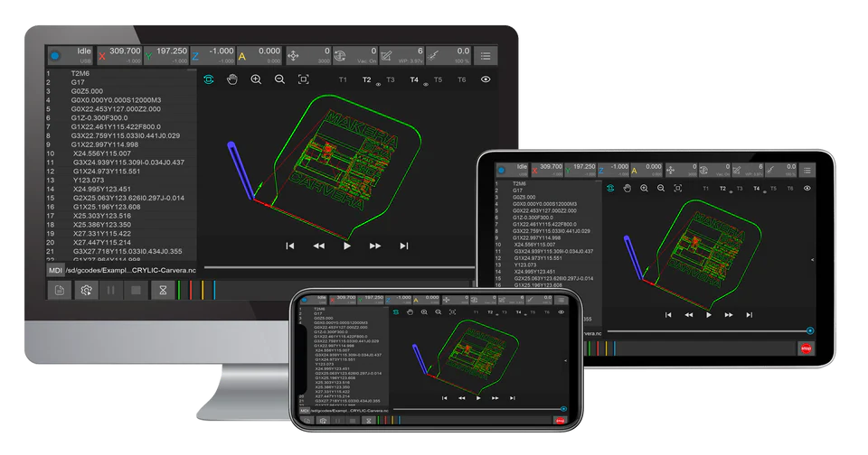
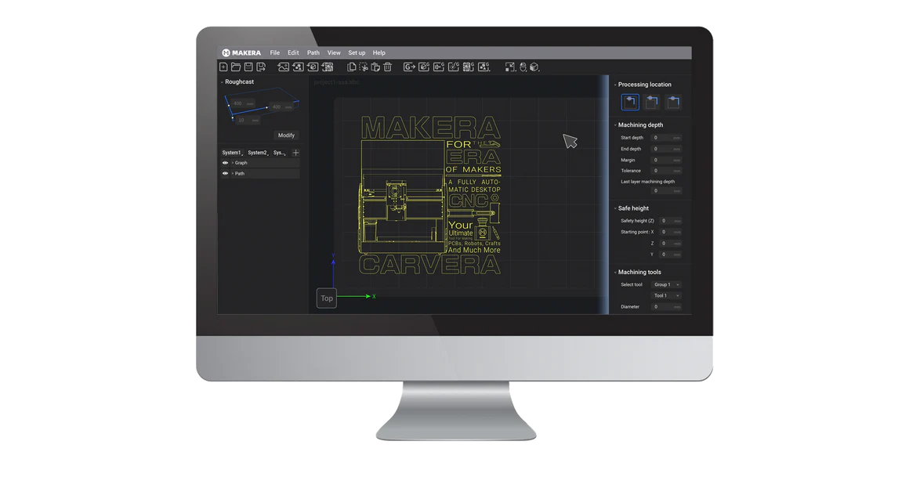
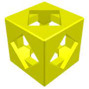
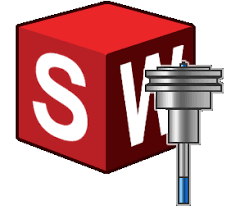
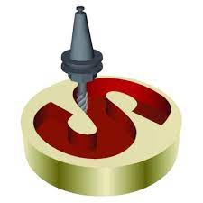
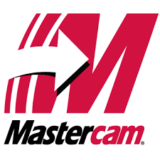

Informations générales
|

Une machine puissante nécessite un logiciel puissant. Le logiciel Controller prend entièrement en charge les CNC de bureau Carvera et Carvera Air et fonctionne sous Windows, Mac, Android et iOS (bientôt disponible), en connexion filaire ou à distance. |

Un programme de FAO convivial et performant pour la Carvera et la Carvera Air. Depuis la publication de la bêta publique initiale en juillet 2024, les utilisateurs Makera peuvent commencer à créer des objets extraordinaires plus facilement que jamais sur les appareils Windows et Mac. |
Veuillez télécharger le logiciel depuis notre site officiel : https://www.makera.com/pages/software
Makera CAM
Fraisage de PCB double face | Fraisage de vecteurs 2D | Gravure laser | Importation et conversion d'images | Réglage simple des paramètres
Présentation de Makera CAM Beta : un logiciel de FAO incroyablement simple
Exploitez tout le potentiel de votre Carvera et Carvera Air avec notre logiciel de FAO complet, qui prend en charge la génération de parcours d'outil 2D, 3D, PCB, laser et rotatifs !
Vérification de l'e-mail
Lors de votre première utilisation du logiciel, vous devrez vérifier votre adresse e-mail. Nous avons enregistré toutes les adresses e-mail des clients dans le système.
Pour les clients
- Si vous avez acheté une Carvera ou participé au financement participatif de la Carvera Air, vérifiez votre compte et connectez-vous avec l'adresse e-mail utilisée pour l'achat.
- Si vous rencontrez des problèmes d'authentification par e-mail, contactez-nous à info@makera.com.
Pour un essai GRATUIT :
Si vous n'êtes pas encore client mais souhaitez essayer Makera CAM, nous proposons une période d'essai de 15 jours pour découvrir les fonctions du logiciel avant de vous engager. Après avoir téléchargé Makera CAM, saisissez votre adresse e-mail pour commencer la période d'essai de 15 jours, puis contactez-nous à info@makera.com pour toute question ou assistance.
Liens importants
• Télécharger Makera CAM Beta: Télécharger maintenant
• Commentaires et assistance: Rejoindre Discord | Signaler des problèmes sur GitHub
• Guide utilisateur MakeraCAM : Guide utilisateur
• Tutoriels: Apprendre à utiliser Makera CAM
Logiciel Carvera Controller
Logiciels de FAO compatibles
Nous développons continuellement notre collection de profils de logiciels de FAO pour répondre aux besoins de nos clients. Voici quelques profils déjà développés.
| Nom_du_logiciel | Description | Téléchargement du profil | Guide d'installation | Guide vidéo |
|---|---|---|---|---|
|
|
Fusion 360 est une plateforme cloud de CAO/modélisation 3D, FAO, IAO et PCB pour la conception et la fabrication de produits. Comparé aux autres logiciels industriels, Fusion 360 est relativement facile à apprendre et constitue une solution tout-en-un. Si vous débutez en CAO et en FAO et souhaitez fabriquer des pièces mécaniques, électroniques, de robot, de drone ou similaires, Fusion 360 est une bonne option. |
Télécharger le profil | Guide d'installation | Guide vidéo |
|
|
VCarve Desktop permet de produire des motifs 2D complexes avec des parcours de profilage, de poche, de perçage et d'incrustation, ainsi que de créer des reliefs 3D et rotatifs en important des fichiers de modèles 3D. Il permet également de réaliser des gravures laser avec un module complémentaire. VCarve Desktop convient au travail du bois, à la création de bijoux, à la réalisation artistique, etc. |
Télécharger le profil | Guide d'installation | Guide vidéo |
|
 |
Kiri:Moto est une application gratuite et open source, accessible depuis un navigateur, qui relie la conception 3D à la fabrication grâce à des outils de FAO, d'impression 3D et de sortie laser. Aucun logiciel n'est à installer ; toutes les données et le traitement restent privés et locaux dans la fenêtre du navigateur. Importez des fichiers STL, OBJ et 3MF et exportez du GCode ou du SVG. Les opérations de FAO sur 3 et 4 axes comprennent l'ébauche, les poches, le contournage, le traçage et bien plus. Prévisualisez et animez vos tâches à l'avance pour voir le résultat avant le début du fraisage. | Profil intégré | Lancer Kiri:Moto | Guide vidéo |
|
|
- Importer des illustrations dans différents formats courants de graphiques vectoriels et d'images. |
Télécharger le profil | Guide d'installation | Guide vidéo |
|
 |
SolidWorks CAM est une technologie intégrée et fondée sur les connaissances qui automatise les processus de conception et de fabrication dans l'environnement SolidWorks. | Télécharger le profil | Guide d'installation | Guide vidéo |
|
 |
SolidCAM est un logiciel de FAO intégré pour les applications CNC, qui offre des outils avancés de fraisage et de tournage tout en s'intégrant parfaitement à SolidWorks. | Guide d'installation | ||
|
 |
MasterCAM est une solution de FAO polyvalente qui offre des outils avancés de conception 2D et 3D, un usinage de précision et des fonctions de programmation efficaces. | Télécharger le profil | Guide d'installation | |
|
|
Siemens NX est une solution complète et intégrée de CAO, FAO et IAO qui favorise l'innovation et la productivité. |
Télécharger le profil | Guide d'installation | |
|
|
GibbsCAM est un système de FAO complet qui offre de puissantes fonctions de programmation CNC pour le fraisage, le tournage, l'usinage multitâche et l'électroérosion à fil. | Télécharger le profil | Guide d'installation | |
|
|
Carveco propose une gamme de logiciels de conception et de fabrication créatives pour vous aider à réaliser de magnifiques produits artistiques sur votre CNC. | Télécharger le profil | Guide d'installation |